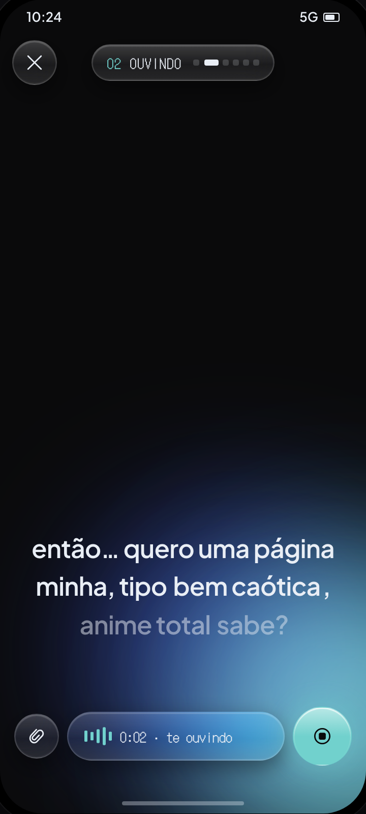
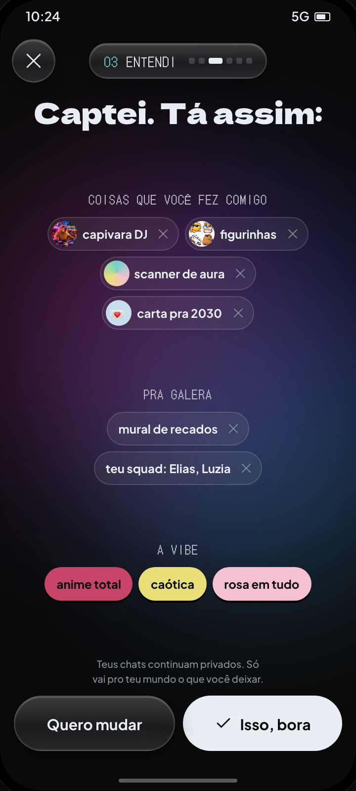
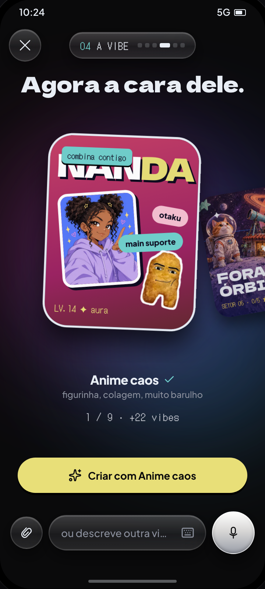

Felipe Amorim
Felipe AmorimSay it out loud. Watch the idea take shape.
A voice-first concept for helping people create something they cannot yet describe in product language.
Speak freely. See the idea take shape.
Three distinct moments carry the concept: open voice input, a visible interpretation and an expressive direction. The reveal is already featured above. This is an internal exploration, not a shipped product.



People are asked to describe what they cannot yet picture.
An empty prompt assumes that someone can name the right thing, in the right vocabulary, before they have seen any possibilities. This exploration starts with what people can do naturally: talk.
Let them speak first. Make understanding visible.
The person can speak freely, without filling out a form. The assistant reflects the request as a set of organised ideas, so any misunderstanding is visible and easy to correct before generation.
Keep the concept expressive and the structure buildable.
The reveal can be vivid, but the underlying flow stays ordered. The prototype separates the visual moment that helps someone imagine the idea from the simple structure a product would need to deliver.